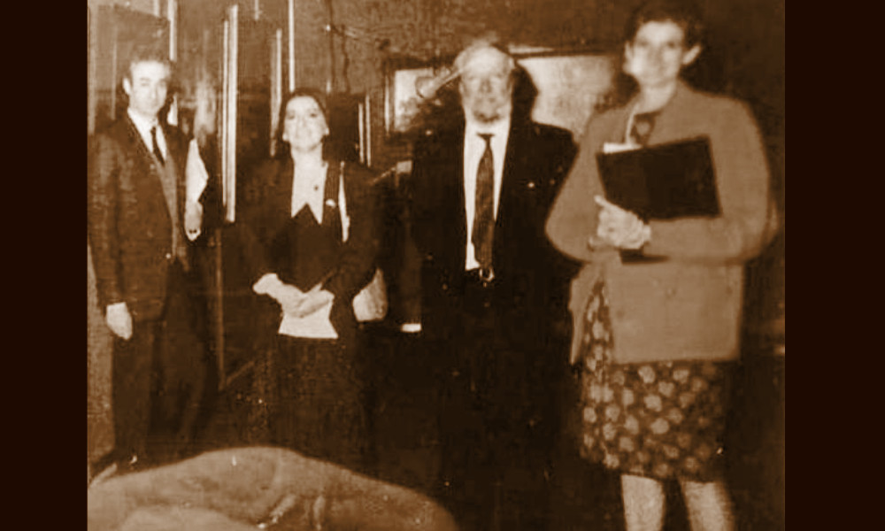

Caretto
Torino, entità attiva dal 1937, tuttora in attività

- PERSONE
- Luigi Caretto, 1878–1940, antiquario
Giorgio Caretto, 1925–2008, antiquario
Luigi Caretto, 1957–, antiquario - INSEGNA
- Galleria Luigi Caretto
- IN CATALOGO
- Opere transitate, catalogo della Fondazione Zeri →
La storia della Galleria Caretto affonda le proprie radici nella Torino della Belle Époque, in un contesto cittadino sospeso tra la tradizione ottocentesca e il rapido sviluppo industriale del primo Novecento. La galleria venne fondata nel 1911 da Luigi Caretto (1878-1940), il quale, animato da una profonda passione per l’arte antica, abbandonò l’attività bancaria della Banca Caretto e Nani per dedicarsi interamente al mercato antiquario. Le prime sedi della galleria sono legate al centro storico torinese: inizialmente via dell’Arsenale, già documentata nel 1937, e successivamente, a partire dal 1950, via Maria Vittoria.
Luigi Caretto scomparse prematuramente nel 1940 e a prendere le redini dell’attività fu il figlio Giorgio Caretto (1925-2008). Nel 1946, appena ventenne, Giorgio iniziò però a costruire con determinazione un percorso autonomo, scegliendo con decisione di concentrarsi sulla pittura antica. Sono gli anni di crescita, studio, viaggi e scoperte (come quella che si tramanda in famiglia di un’opera di Tintoretto) che portano il giovane a una piena comprensione della pittura antica, tanto da essere considerato un conoscitore raffinato.
Nel 1950 aprì la sede di via Maria Vittoria 11, spazio che segnò l’avvio di una nuova fase della galleria, per poi spostarsi nel 1964 al numero 10. Parallelamente, Giorgio consolidò rapporti importanti con figure del mondo antiquario e culturale, tra cui Luigi Scagliotti e Gustavo Adolfo Rol, noto non solo per le sue celebri attività esoteriche ma anche come raffinato antiquario e conoscitore d’arte.
La vera svolta della Galleria Caretto fu però la specializzazione nella pittura fiamminga e olandese del Cinquecento e del Seicento, facendo della pittura nord-europea il principale ambito di studio, ricerca e mercato della galleria. Tale scelta nacque anche dal contesto culturale torinese, storicamente sensibile all’arte nordica grazie alle collezioni del Museo Civico e soprattutto della Galleria Sabauda, ricca di opere rinascimentali e primitivi fiamminghi.
A partire dagli anni Sessanta, in un periodo di trasformazione del mercato antiquario internazionale, la galleria spostò progressivamente il proprio baricentro verso Londra, nuovo centro europeo del commercio d’arte, sostituendo progressivamente Parigi come riferimento privilegiato. Parallelamente si sviluppò un intenso lavoro di ricerca e divulgazione attraverso mostre tematiche dedicate alla pittura fiammingo-olandese. Le mostre annuali della Galleria Caretto divennero così un appuntamento stabile e riconosciuto, dedicato a temi specifici quali il paesaggio, le scene di genere e altri soggetti caratteristici della pittura fiamminga e olandese. Negli anni Ottanta e Novanta Giorgio fu progressivamente affiancato dai figli Patrizia e Luigi Caretto (1957-). Patrizia si orientò verso la pittura del XVIII e XIX secolo, mentre Luigi a partire dal 1981 raccolse più direttamente l’eredità paterna nella gestione della galleria e nella specializzazione nordica. Sotto la sua guida l’attività rafforzò ulteriormente il proprio profilo scientifico e internazionale, sviluppando importanti rapporti con il mondo accademico e con studiosi di primo piano come Federico Zeri e Bert Meyer.
Da tali collaborazioni nacquero progetti espositivi di rilievo, tra cui mostre come Ut Pictura Ita Visio (1999) e Cielo Terra e Acque (2006), dedicate a temi specifici della pittura fiammingo-olandese. Accanto all’attività espositiva e scientifica, Luigi Caretto ha anche le relazioni commerciali internazionali della galleria, instaurando una solida collaborazione con la Galleria Soraya Cartategui di Madrid e aprendo così un importante collegamento con il mercato spagnolo.
Collaboratori
- Bert Meyer (storico dell'arte)
- Federico Zeri (storico dell'arte)
- Gustavo Adolfo Rol (antiquario)
- Luigi Scagliotti (antiquario)
Eventi significativi nell'attività antiquariale
- 1999 - Ut Pictura Ita Visio: La Galleria Caretto organizza la mostra "Ut Pictura Ita Visio" dedicata all'arte fiammingo-olandese
- 2006 - Cielo Terra e Acque: La Galleria Caretto organizza la mostra "Cielo Terra e Acque" dedicata all'arte fiammingo-olandese